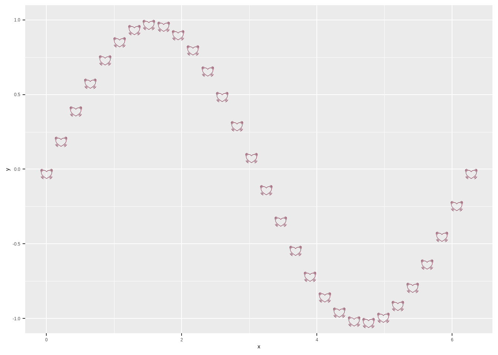

Section 3 R resources from absolute beginners to more advance
3.1 Introduction
It may not be a good idea to put this section here. But today, I went to the Mississippi Public Health Association ’s World Field Epidemiology Day Workshop. I meet some new friends there who study Epidemiology that want to learn R. I think I need to share these really good and free 😄 resources.
The resources will be listed from the absolute beginner to more advanced levels. If you have any suggestions or want to add more resources about the topic that you want to learn, please let me know (here is my LinkedIn account). I will update and correct this according to that.
3.2 For absolute beginners.
- MarinStatsLectures-R Programming & Statistics was the first teacher that taught me the first steps in R. This Chanel contains many topics that you can learn. This is the first series that you need to watch if you know nothing about R. This will teach you how to install R, R studio, install R packages, import your data… Then you can explore other playlists from him if you are interested.
3.3 R graphs galleries
I have seen you people discuss a lot about how to use graphs. This link, https://r-graph-gallery.com/ will give you a quick tutorial on creating those plots. Please click on the plot you want, for example, Barplot, then it will take you to the page with many bar plots and instructions. This is the link I got after choosing the most basic bar plot from the main page: [https://r-graph-gallery.com/218-basic-barplots-with-ggplot2.html].
Another library we can use to create plots is Plotly. Here is the link to the Plotly gallery: https://plotly.com/r/. Similarly, click the plot you want to make and have the code on your hands. (I personally use ggplot2 more frequently than Plotly).
3.4 Some R excellent books
R for Data Science is the book everyone who studies R needs to read. It teaches you how to do Data Visualization, Data Wrangling, and many more. We also have cheat sheets that are associated with this book. You can download them from here.
Advanced R, as its name says about itself, is an advanced R book.
I have not read these two books, but I think they may be helpful for you. R for Epidemiology and R for applied epidemiology and public health
<<<<<<< HEAD
======= >>>>>>> 56eeb42d87bc29311ec57c37bae5be9a4b59edac